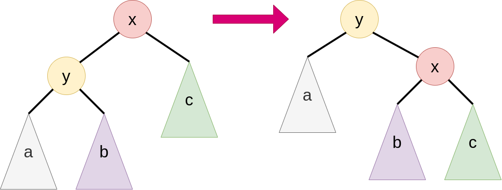
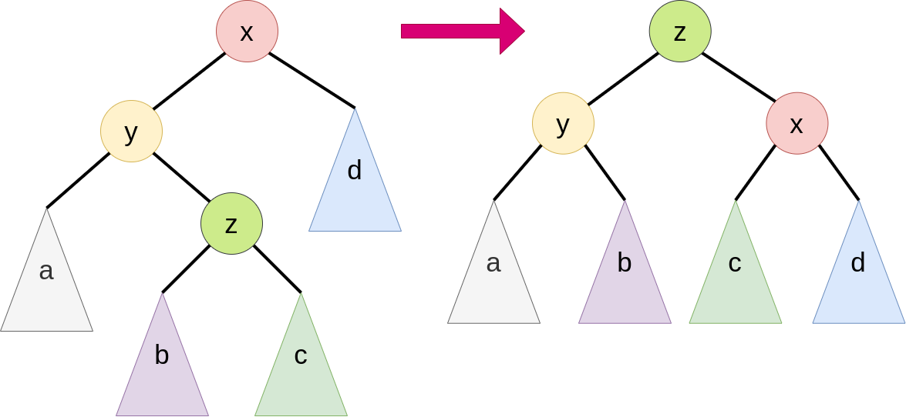

In 1962 mathematicans and computer scientist Georgy Adelson-Velsky and Evgenii Landis inventet the AVL tree. This was the first ever discoverd self-balanced binary search tree . Today other balanced tree implemenation like the red-black trees are known.
The major advantages of AVL trees over binary search trees (BSTs) are, that insertions, deletions and searches are guaranted in O(log(n)) time. Contrary, the worst case time for those operations in BSTs is O(n).
The height of a binary search tree is defined as the number of elements on the longest path from the root to a leaf. A node is defined as balanced, if the height of the left subtree is at most one smaller or one bigger than the hight of the right subtree. A tree is called balanced or an AVL tree when all nodes are balanced.
Rotating x, y to the right
In this example we assume, that the node x is unbalanced and the longest path to a leaf starting from x ends in the subtree a. The way we can balance the tree is by moving x to the right and y up to where x previously was. The only subtree that has to be rearanged is b, which has to go left to x.
Rotating x, z to the right
In this example we assume, that the node x is unbalanced and the longest path to a leaf starting from x ends in the subtree starting form the node z. The way we can balance the tree is by moving x to the right and z up to where x previously was. The subtrees that have to be rearanged are the children of z, namely b and c. b moves right to y and c goes left to x.